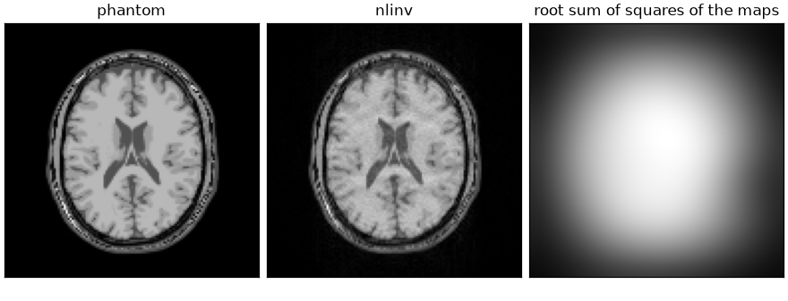
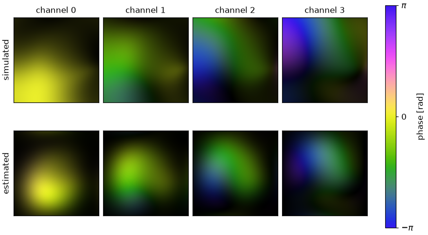

Note
Go to the end to download the full example code.
Nonlinear inversion#
Estimating the image and the coil sensitivities together, from undersampled data whose fully sampled central region is too small for a separate calibration.
ESPIRiT [1] estimates the sensitivities from a fully sampled region at the centre of k-space, and a linear reconstruction then uses them as known. Where the acquisition provides no such region, the sensitivities are unknowns like the image, and the forward model
is bilinear rather than linear: it is a product of two unknowns. Nonlinear
inversion (nlinv) [2] solves it by iteratively regularized
Gauss-Newton [3], and
the smoothness of the sensitivities, which constrains the factorization,
enters as a weighting inside the model rather than as a penalty beside it.
The phantom and the coil sensitivities are built as in From k-space to image; the cell that does it is hidden on this page and present in the script this page can be downloaded as.
import csv
from pathlib import Path
import brainweb_dl
import numpy as np
import torch
from brainweb_dl import get_mri
import bartorch
import bartorch.tools as bt
from bartorch import nlop
SIZE = 128
COILS = 8
ACCELERATION = 3
CALIBRATION = 6 # lines at the centre, far fewer than ESPIRiT needs
pattern = lines.reshape(SIZE, 1).to(torch.complex64)
measured = kspace[:, None] * pattern
print(f"{float(lines.mean()):.0%} of the phase encodes, {CALIBRATION} of them at the centre")
32% of the phase encodes, 6 of them at the centre
Six central lines locate the centre of k-space. With ESPIRiT’s default
kernel of six points, a calibration region of six lines leaves a single
kernel position along the phase-encoding axis, too few rows for the
calibration matrix of bartorch.tools.ecalib().
The application#
bartorch.tools.nlinv() takes the k-space and returns the image and,
when asked, the sensitivities it estimated along the way. Its iteration count
is Gauss-Newton steps rather than linear iterations, and it is a
regularization parameter rather than a convergence threshold: the
regularization weight is halved after every step, so stopping early leaves a
smoother image and running longer eventually lets the noise in. Eight steps
is BART’s default; twelve are used here.
NRMSE 0.078


The estimated sensitivities are smooth by construction rather than by agreement with the data: the coil unknown is not the sensitivity map but its k-space representation \(\hat{s}\), and the map follows as \(S = \mathcal{F}^{-1}[(1 + a|k|^2)^{-b/2} \hat{s}]\). A step in the unknown is therefore a smooth change in the map by construction, and the joint problem needs no separate penalty on the coils. The pair is determined only up to a common factor: multiplying every map by a nonzero function \(\gamma(r)\) and dividing the image by it leaves the data unchanged (Nonlinear forward models). The smoothness weighting restricts \(\gamma\) to smooth functions, which is why the two rows above are drawn on their own scales and why a nonlinear inversion is reported after normalizing by the root sum of squares of the maps. Outside the object neither factor is determined at all – their product is zero for any pair – so what is drawn there follows from the initialization and the weighting.
The model and the solver#
bartorch.nlop.NonlinearSense is that forward model as a nonlinear
operator with two inputs, and bartorch.nlop.IRGNM is the
Gauss-Newton loop over it. Each step linearizes the model at the current
point \(x_k\) and solves
with \(x_{\mathrm{ref}}\) zero unless one is given and \(\alpha_k\) halved after every step, so the first steps are heavily regularized and the later ones are not.
model = nlop.NonlinearSense(
(COILS, 1, SIZE, SIZE), pattern=lines.reshape(1, SIZE, 1).to(torch.complex64)
)
print(f"inputs {model.ishapes} -> output {model.oshapes}")
inputs ((1, 1, 128, 128), (8, 1, 128, 128)) -> output ((8, 1, 128, 128),)
nlinv scales the data by 100 / ||y|| before it starts, which fixes
the meaning of \(\alpha\), and takes its conjugate gradients to a hundred
iterations or a tolerance of a tenth. Given the same three settings the loop
written here is the application.
data = model.prepare(measured * (100.0 / float(torch.linalg.vector_norm(measured))))
fitted, coefficients = nlop.IRGNM(iterations=STEPS, cg_maxiter=100, cg_tol=0.1)(data, model)
maps = model.coils(coefficients)
combined = fitted.squeeze() * bartorch.rss(maps[:, 0], axes=(0,))
difference = float(
(fitted.squeeze() - bt.nlinv(measured, maxiter=STEPS, normalize=False)).abs().max()
)
print(f"largest difference from nlinv: {difference / float(fitted.abs().max()):.1e}")
print(f"NRMSE {bt.nrmse(image.abs(), combined.abs(), scaled=True):.3f}")
largest difference from nlinv: 1.0e-03
NRMSE 0.078
The two agree to single-precision round-off rather than to the last bit, because the scaling above is computed here and inside the application by different expressions.
What the operator layer adds is everything around the step. The linearized
problem can go to a solver from bartorch.optim instead of the
conjugate gradients inside the library (inner=optim.CG() is the same
method written out, and a regularized solver makes the step a regularized
one), the loop can be unrolled as bartorch.nlop.IRGNMBlock, and a
Gauss-Newton step is differentiable with respect to the data, the iterate,
the regularization centre and \(\alpha\)
(Differentiation through reconstruction).
Reconstructing parameter maps rather than an image, by putting a signal model in front of the same encoding, is Parameter maps straight from k-space.
References#
Total running time of the script: (0 minutes 4.547 seconds)